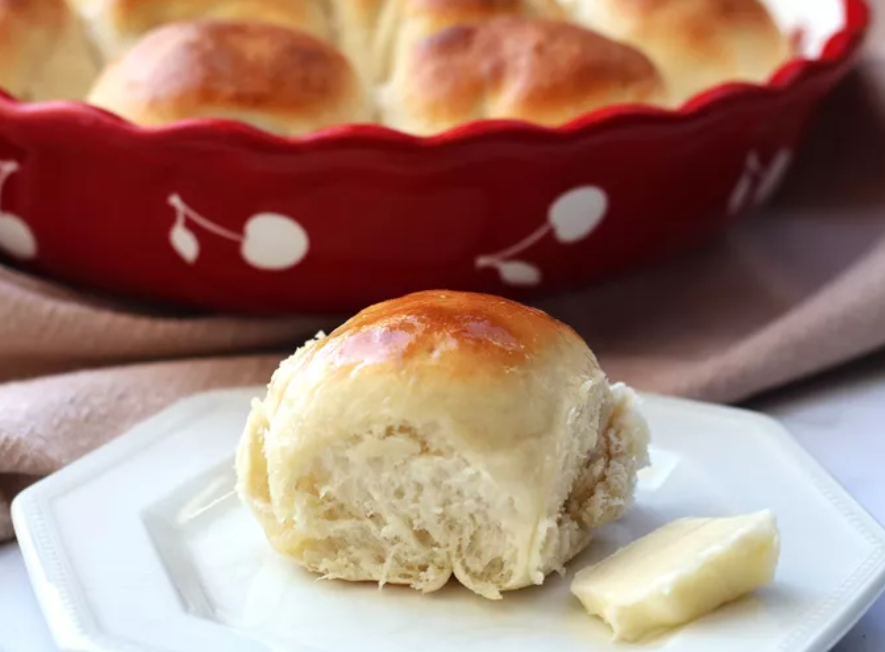

Home
Classic Dinner Rolls

Description
These dinner rolls bake up fluffy and golden with just a hint of sweetness. Brush warm rolls with melted butter just before serving.
These irresistible dinner rolls are fluffy, buttery, and just a little bit sweet for a delicious flavor combination. No one will be able to say no to these dinner rolls — especially when they're warm right out of the oven.
- Prep Time: 20 mins
- Cook Time: 25 mins
- Additional Time: 40 min
- Total Time: 1 hr 25 mins
- Servings: 12
- Yield: 12 rolls
Ingredients
You'll only need a few pantry staple ingredients for this recipe:
- Flour: Of course, bread needs flour. Use all-purpose flour for the best results.
- Yeast: This recipe calls for RapidRise yeast, which is what we recommend you use. However, you can use active yeast, you'll just have to follow the directions on the package. Whatever yeast you use, make sure it's not expired or else the dough won't rise.
- Sugar: Two tablespoons of sugar is all you need to add a hint of sweetness.
- Salt: Salt adds a touch of flavor.
- Milk:Warm milk will activate the yeast, moisten the dough, and keep it soft while it bakes.
- Butter: Butter adds a rich flavor to the rolls.
Steps
You'll find the full, step-by-step recipe below, but here's what you can expect when making dinner rolls from scratch:
-
Make the dough: Combine flour, sugar, undissolved yeast, salt, warm milk, water, and butter in a bowl. Beat with an electric mixer, adding more flour as needed, for a few minutes. Continuously scrape down the sides.
-
Knead the dough: Turn the dough out onto a floured and knead until smooth and elastic.
-
Let the dough rise: Cover and let the dough rise. This should only take 10 minutes if you're using fast-acting instant yeast (like Fleischmann's RapidRise Yeast).
-
Shape the dough: Cut and shape the dough into rolls and place on a greased baking sheet. Cover and let rise in a warm place until the rolls have doubled in size.
-
Bake the rolls: Bake the proofed rolls until golden brown. Brush with melted butter and serve warm.